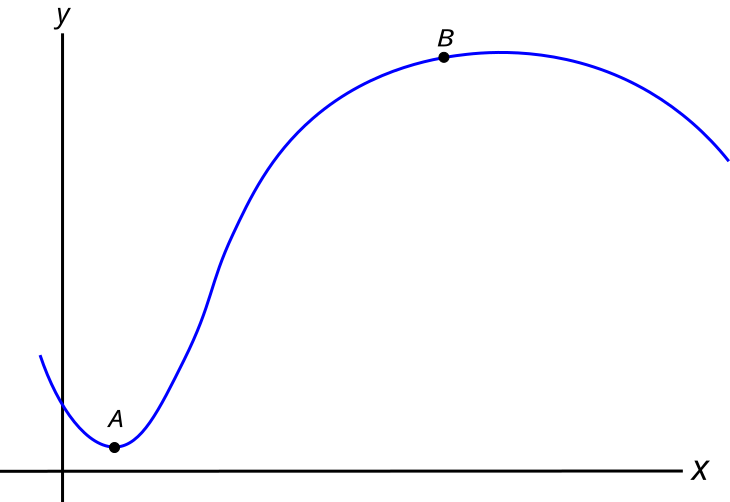

Homework Section 13.3
- Find the exact value of the length of the curve given by `bb(r)(t) = 2t bb(i) + cos t bb(j) - sin t bb(k)`, `-2 <= t <= 8`.
- Set up the integral that gives the length of the following curve and then approximate that length, accurate to the nearest thousandth, using a calculator: `bb(r)(t) = 2t bb(i) + e^t bb(j) - 3t^2 bb(k)`, `-5 <= t <= 6`.
-
Find the arc length function (starting from the point corresponding to `t = 0`) and use it to reparameterize `bb(r)(t)` in terms of arc length.
- `bb(r)(t) = 5t bb(i) + cos t bb(j) + sint bb(k)`
- `bb(r)(t) = << 3t , \ 1 + 2t , \ 4-t >>`
-
Find the unit tangent and unit normal vectors (the unit normal vector is defined as `bb(N)(t) = (bb(T)'(t))/(||bb(T)'(t)||)` ):
- `bb(r)(t) = 2t bb(i) + cos t bb(j) - sin t bb(k)`
- `bb(r)(t) = e^(-t) bb(i) + e^t bb(j) - tsqrt(2) bb(k)`
-
Find the curvature:
- `bb(r)(t) = 2t bb(i) + cos t bb(j) - sin t bb(k)`
- `bb(r)(t) = e^(-t) bb(i) + e^t bb(j) - tsqrt(2) bb(k)`
- Find the curvature: `bb(r)(t) = 2t bb(i) + (1 - t^2) bb(j) - 3t bb(k)`.
- Find the curvature of `bb(r)(t) = 2t bb(i) + (1 - t^2) bb(j) - 3t bb(k)` at the point `(2, 0, -3)`.
- Find the curvature of `y = 8x^4 - x`.
-
- Where does the below curve have greater curvature, point A or point B? Justify your answer.
- Sketch the Circle of Curvature at point A and use its radius to approximate the curvature of the given curve at point A. Use millimeters as your units, and scale the portion of the x-axis that is shown to 7.7 mm.
